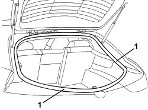
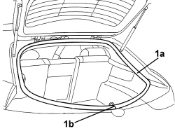

7015A30 TAILGATE COMPARTMENT SEAL - R+R
- Path
- Procedures > 70 FITTINGS > 7015 TAILGATE/FLAP > 7015A TAILGATE ASSEMBLY > 7015A30 TAILGATE COMPARTMENT SEAL - R+R
- Kind
- repair procedure (removal / refitting; the operation number is the code)
- Applies to
- all engines; all production periods
- Interactive page
- https://sloeber94.github.io/elrnDB-aBrrSpdr/en/#/946002549
Applies to: all engines; all production periods
 Removing
Removing
 Refitting
Refitting- Open the tailgate.
- Lower the rear parcel shelf releasing the cords from the tailgate.
1. Release the seal and remove it.

Applies to: all engines; all production periods
Refitting
Removing- Check that the seal is intact and there are no signs of damage.
1. Place the seal (1a) in position so that the join (1b) is in the centre of the lower side.

Applies to: all engines; all production periods
- Check that the contact between the seal and the tailgate is correct.